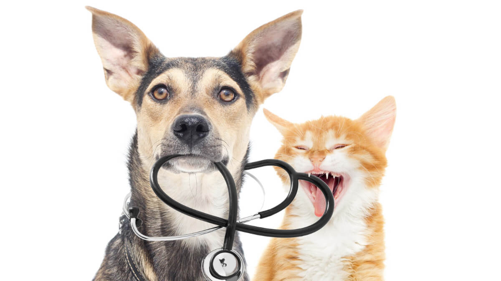

Nossa Especialidade
A idéia de utilizar um software online é pra facilitar todas as etapas do ciclo de atendimento, desde a reserva até a saída do cliente.
Os animais não conseguem se expressar como nós, por isso, é muito importante entender a importância de um acompanhamento constante.
Nesse contexto, a consulta clínica é fundamental, pois é durante as visitas periódicas que o médico realiza todos os exames necessários para avaliar a saúde do seu animal. Possibilitando assim, a detecção de possíveis problemas antes que eles se agravem. Quanto mais rápida a intervenção, melhor para a saúde do seu amigo!

Quem Somos
Mais do que um profundo conhecimento em medicina veterinária, nossa equipe tem muita sensibilidade e paixão ao atender esses queridos bichinhos. Com profissionais altamente qualificados e em constante aprimoramento, nossa equipe se desenvolveu e continua se desenvolvendo através de cursos de especialização, congressos e eventos acadêmicos.
